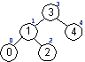
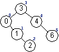
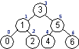

Sequence's Nice Properties:
Sequence's Drawbacks:
Using Binary Tree for Sequence's Representation
Example:
|
Sequence's add Operation
adjustedPosition = pos - (|left| + 1)
template <class T>
void Sequence3<T>::insertInTree (TreeOfT& t, Integer pos, T& x)
//! updates t
//! restores pos
//! clears x
//! requires: 0 <= pos <= |t|
//! ensures: there exists a, b : BinaryTree of T (t = (x,a,b) and
//! inorderTraversal(#t) = inorderTraversal(a) * inorderTraversal(b) and
//! |a| = pos)
//! decreases |t|
{
//...
} // insertInTree
//------------------------------------------------------------
template <class T>
void Sequence3<T>::add (Integer pos, T& x)
//! updates self
//! restores pos
//! clears x
//! requires: 0 <= pos <= |self|
//! ensures: self = #self[0, pos) * <#x> * #self[pos, |#self|)
{
insertInTree (rep, pos, x);
} // add
|
Example: A Series of add Operations
| Conceptual Sequence Value | Internal Representation Value Unbalanced Tree |
Internal Representation Value Balanced Tree |
|
|---|---|---|---|
IntegerSequence s1; |
s1 = < > | rep = EMPTY | rep = EMPTY |
|
s1 = <3> | rep = |
rep = |
x1 = 4; |
s1 = <3,4> | rep = |
rep = |
x1 = 0; |
s1 = <0,3,4> | rep = |
rep = |
x1 = 1; |
s1 = <0,1,3,4> | rep = |
rep = |
x1 = 2; |
s1 = <0,1,2,3,4> | rep = |
rep =  |
x1 = 6; |
s1 = <0,1,2,3,4,6> | rep =  |
rep = |
x1 = 5; |
s1 = <0,1,2,3,4,5,6> | rep = |
rep =  |
x1 = 7; |
s1 = <0,1,2,3,4,5,6,7> | rep = |
rep = |
Maintaining Balance
Implementing the Other Sequence Operations
Keep in mind that BinaryTree's model is a 3-tuple defined as follows:
//! BinaryTree1 is modeled by tuple of //! label: T //! leftSubtree: BinaryTree1 //! rightSubtree: BinaryTree1 //! exemplar self |
remove
|
void insertInTree(TreeOfT& t, Integer pos, T& x); //! updates t //! restores pos //! clears x //! requires: 0 <= pos <= |t| //! ensures: there exists a, b : BinaryTree of T (t = (x,a,b) and //! inorderTraversal(#t) = inorderTraversal(a) * inorderTraversal(b) and //! |a| = pos) //! decreases |t| |
|
void replaceInTree(TreeOfT&t, Integer pos, T&x) //! updates t //! restores pos //! replaces x //! requires: 0 <= pos < |t| //! ensures: there exists y : T (there exists a, b : BinaryTree of T (#t = (y,a,b) and //! t = (x,a,b) and //! inorderTraversal(t) = inorderTraversal(a) * <x> * inorderTraversal(b) and //! |a| = pos and //! x = y)) //! decreases |t| |
|
T& treeAccessor(TreeOfT& t, Integer pos) //! restores t //! restores pos //! requires: 0 <= pos < |t| //! ensures: there exists a, b : BinaryTree of T (t = (treeAccessor,a,b) and |a| = pos) //! decreases |t| |
|
void concatenateTrees(TreeOfT& t1, TreeOfT& t2) //! updates t1 //! clears t2 //! ensures: inorderTraversal(t1) = inorderTraversal(#t1) * inorderTraversal(#t2) //! decreases |t1| or |t2| |
|
void splitTree(TreeOfT& t1, Integer pos, TreeOfT& t2) //! updates t1 //! replaces t2 //! restores pos //! requires: 0 <= pos <= |t1| //! ensures: inorderTraversal(#t1) = inorderTraversal(t1) * inorderTraversal(t2) and |t1| = pos //! decreases |t1| |
split Examples:
1) sx.split (3, sy);
| sx before Decompose | sx after Decompose | ||
| sx = <0,1,2,3,4,5,6,7> | left | label | right |
| 3 | |||
2) sx.split (2, sy);
3) sx.split (5, sy);